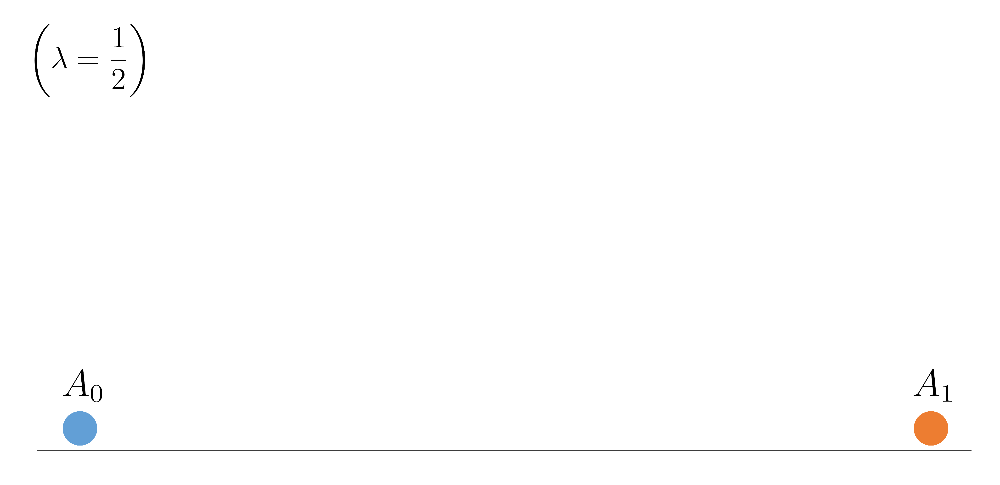
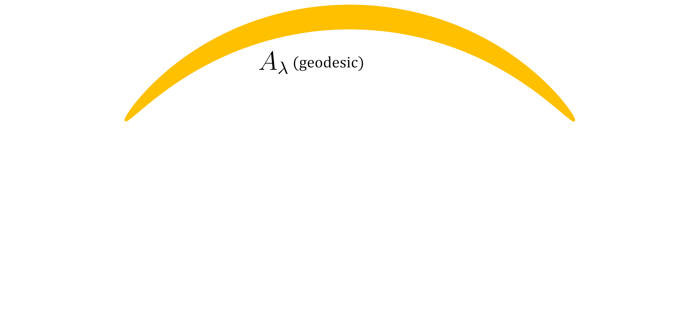
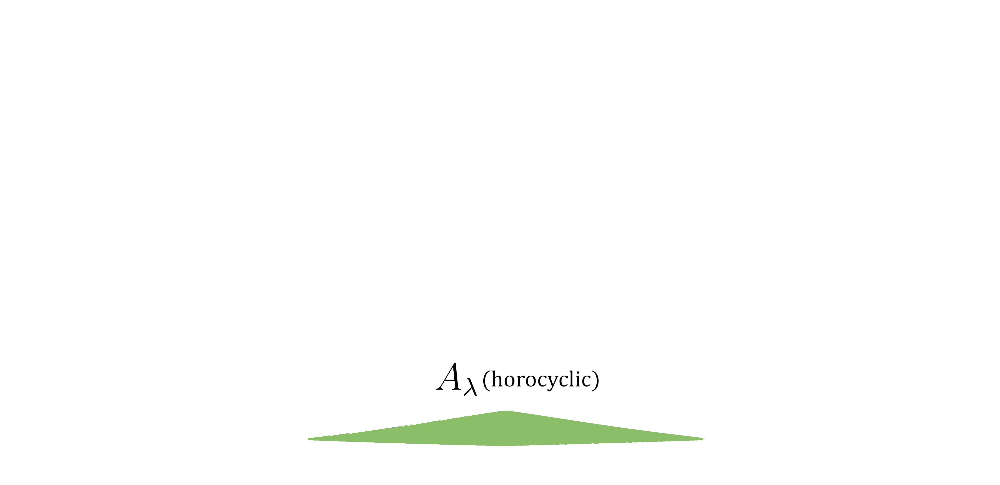
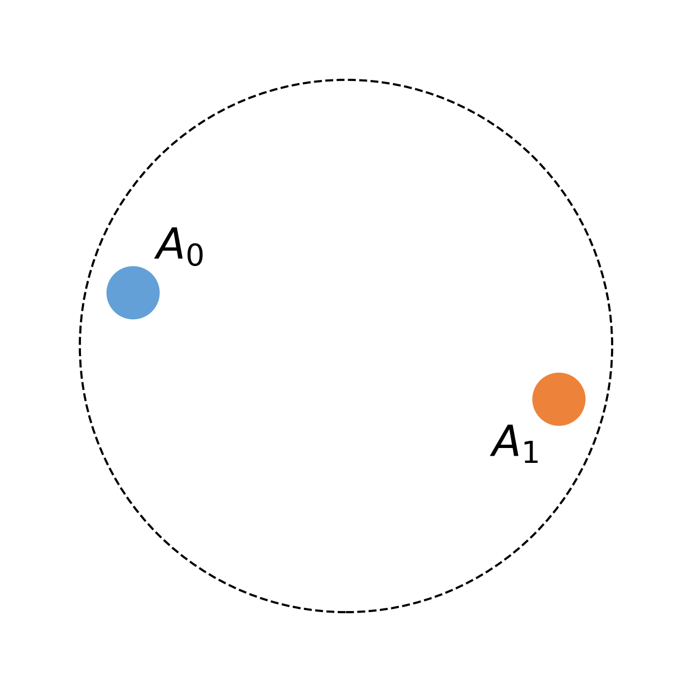
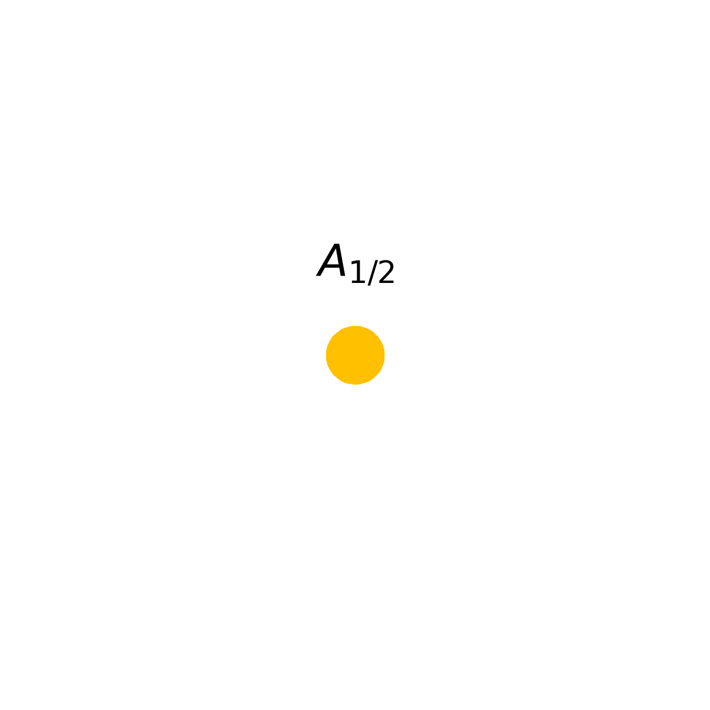
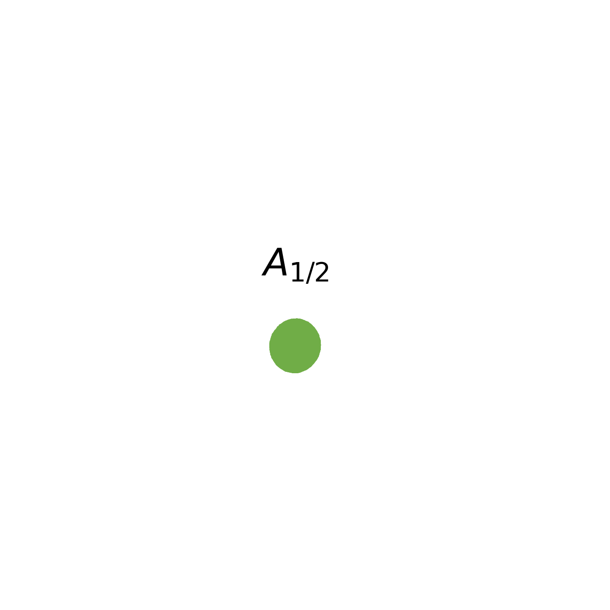
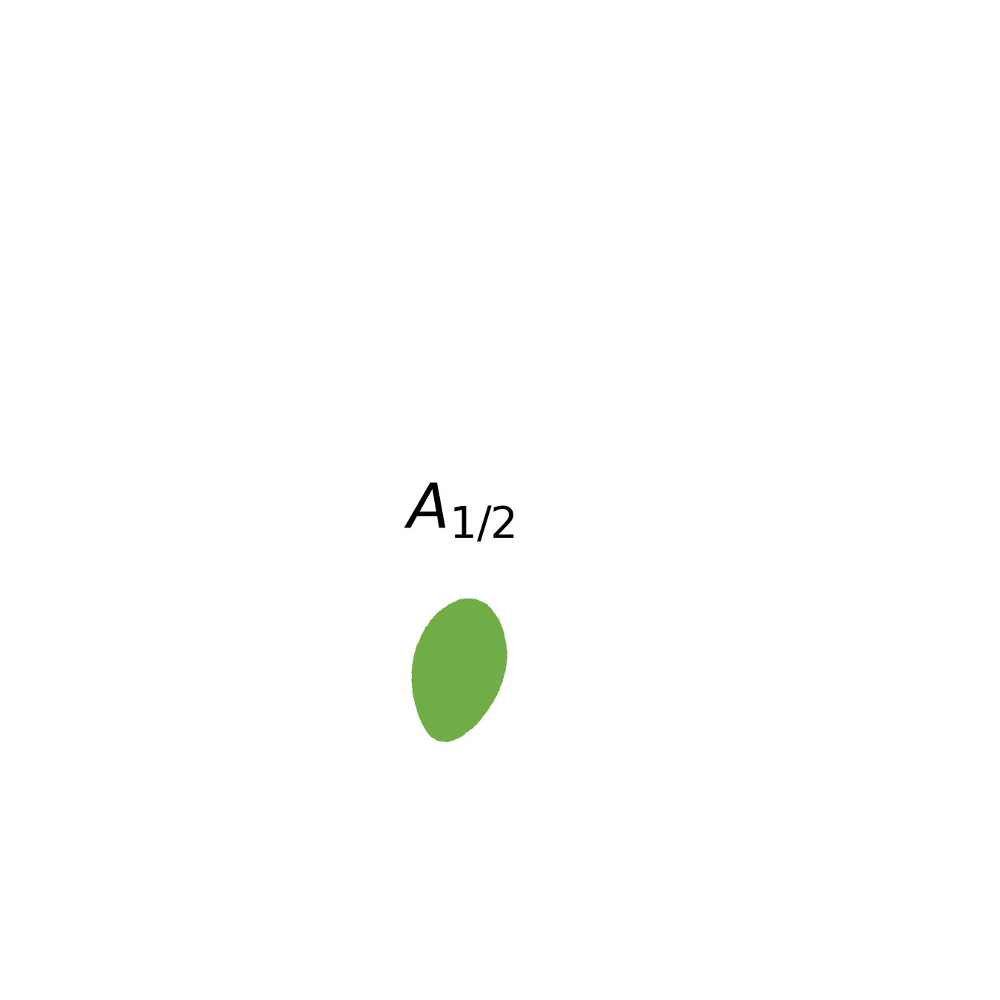
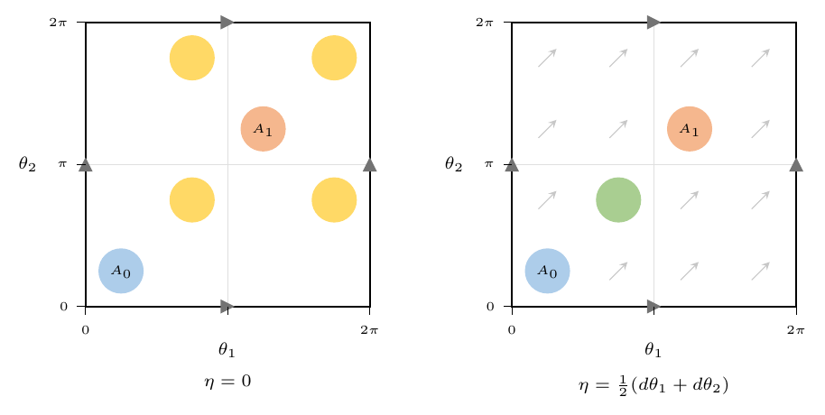

\(A_0,A_1 \subseteq \mathbb{R}^n\) , \(0 \le \lambda \le 1\) .
\[A_\lambda : =(1-\lambda) A_0 + \lambda A_1 = \left\{(1-\lambda)a_0 + \lambda a_1 \, \mid \, a_0 \in A_0, \, a_1 \in A_1\right\}.\]Theorem (Brunn-Minkowski) :
\(A_0,A_1 \subseteq \mathbb{R}^n\) Borel, nonempty, \(\qquad 0 \le \lambda \le 1\) , \[\mathrm{Vol}(A_\lambda)^{1/n} \ge (1-\lambda)\cdot\mathrm{Vol}(A_0)^{1/n} + \lambda\cdot\mathrm{Vol}(A_1)^{1/n}.\]Theorem (Brunn-Minkowski) :
\(A_0,A_1 \subseteq (M,g)\) Borel, nonempty, \(\qquad 0 \le \lambda \le 1\) , \[\mathrm{Vol}(A_\lambda)^{1/n} \ge (1-\lambda)\cdot\mathrm{Vol}(A_0)^{1/n} + \lambda\cdot\mathrm{Vol}(A_1)^{1/n}.\]Theorem (Cordero-Erausquin, McCann & Schmuckenschläger '01, Sturm '06): \((M,g)\) complete \(n\)-dim Riemannian manifold, \[\mathrm{Ric}_g \ge 0\quad \implies \quad \forall A_0,A_1\,\, \text{Borel,} \,\,\mathrm{Vol}_g(A_0)\mathrm{Vol}_g(A_1) >0\] \[\mathrm{Vol}_g(A_\lambda)^{1/n} \ge (1-\lambda)\cdot\mathrm{Vol}_g(A_0)^{1/n} + \lambda\cdot\mathrm{Vol}_g(A_1)^{1/n}.\]
\(\mathrm{Ric}_g \ge k \implies\) distorted Brunn-Minkowski.
In fact \(\iff\) (Magnabosco, Portinale, Rossi '22).
Metric measure spaces (Sturm '06, Cavalletti-Mondino '15), Finsler (Ohta '09), Sub-Riemannian (Balogh, Kristály & Sipos '16, Barilari, Rizzi & Mondino '22), Lorentzian (McCann '20, Cavalletti-Mondino '20).
Theorem (Cordero-Erausquin, McCann & Schmuckenschläger '01, Sturm '06): \((M,g)\) complete \(n\)-dim Riemannian manifold, \(k\in\mathbb{R}\). \[\mathrm{Ric}_g \ge k\quad \implies \quad \forall A_0,A_1\,\, \text{Borel,} \,\,\mathrm{Vol}_g(A_0)\mathrm{Vol}_g(A_1) >0\] \[ \mathrm{Vol}_g(A_\lambda)^{1/n} \,\ge\, \tau_{1-\lambda}^{k,n}(A_0,A_1)\cdot\mathrm{Vol}_g(A_0)^{1/n} \,+\, \tau_\lambda^{k,n}(A_0,A_1)\cdot\mathrm{Vol}_g(A_1)^{1/n}. \]
\((M,g,\mu)\) weighted Riemannian manifold, \(N \in [n,\infty]\), \(\mathrm{Ric}_{\mu,N} \ge k \implies\) distorted Brunn-Minkowski for \(\mu\) with exponent \(1/N\).
In fact \(\iff\) (Magnabosco, Portinale, Rossi '22).
Metric measure spaces (Sturm '06, Cavalletti-Mondino '15), Finsler (Ohta '09), negative exponent (Ohta '16), Sub-Riemannian (Balogh, Kristály & Sipos '16, Barilari, Rizzi & Mondino '22), Lorentzian (McCann '20, Cavalletti-Mondino '20).
Let \(\mathbf{H}\) denote the hyperbolic plane.
Theorem (A.-Klartag '22): Let \(A_0,A_1 \subseteq \mathbf{H}\) be Borel sets of positive measure and let \(0\le\lambda\le 1\) . Denote by \(A_\lambda\) the set of points of the form \(\gamma(\lambda \ell)\) , where \(\gamma:[0,\ell]\to \mathbf{H}\) is a horocycle satisfying \(\gamma(0) \in A_0\) and \(\gamma(\ell) \in A_1\) . \[\implies \qquad \mathrm{Vol}(A_\lambda)^{1/2} \ge (1-\lambda)\cdot\mathrm{Vol}(A_0)^{1/2} + \lambda\cdot\mathrm{Vol}(A_1)^{1/2}, \] where \(\mathrm{Vol}\) denotes the hyperbolic volume measure.



\((M,g)\)-Riemannian manifold, \(\Omega\) closed two-form on \(M.\)
\((M,g)\) Riemannian manifold, \(\eta\) one-form, \(\Omega = d\eta\).
\(A_0,A_1\subseteq M, \quad 0 \le \lambda \le 1\)




If \(V \) is a vector field such that \[\nabla_VV = 0, \qquad V\vert_x = v \qquad \text{ and } \qquad \nabla V\vert_x = 0,\] then \(V\mathrm{div} V\vert_x = -\mathrm{Ric}(v).\)
If \(V = \nabla u\) for a function \(u\) then \((d\Delta u)(\nabla u)\vert_x = -\mathrm{Ric}(v).\)
Geometric interpretation: If we take a small object and let it flow along "parallel" geodesics in the direction \(v,\) then the second (logarithmic) derivative of the object's volume will be roughly \(-\mathrm{Ric}(v).\)
Let \(\Omega\) be a closed 2-form on \(M\) and let \(SM = \{v\in TM : g(v,v)=1\}\) be the unit tangent bundle. The magnetic Ricci curvature is \[\mathrm{Ric}_\Omega(v) \,:=\, \mathrm{Ric}(v) \,-\, (\delta\Omega)(v) \,+\, \tfrac12|\iota_v\Omega|^2 \,+\, \tfrac14|\Omega|^2, \qquad v \in SM.\] cf. (Gouda '97, Grognet '99, Wojtkowski '00, Bai-Adachi '13, Assenza '24)
Here \(\delta\) is the codifferential, \(\iota_v\Omega = \Omega(v,\cdot)\), and \(|\Omega|^2 = \sum_{i,j}\Omega(e_i,e_j)^2\) for any orthonormal frame \((e_j)\).
Proposition (Magnetic Bochner formula): Let \(\sigma\) be a one-form on an open set \(U\subseteq M\) satisfying \[d\sigma = \Omega \qquad \text{and}\qquad |\sigma|\equiv 1.\] Then \[\,-\langle\sigma,\,d\delta\sigma\rangle \,+\, |\Sigma|^2 \,+\, \mathrm{Ric}_\Omega(\sigma^\sharp) \,=\, 0\,\] where \(\Sigma\) is the symmetric part of \(\nabla\sigma\big|_{\ker\sigma}\), and \(\sigma = \langle \sigma^\sharp,\cdot\rangle.\)
In particular, \[-\langle\sigma,\,d\delta\sigma\rangle \,+\, \frac{(\delta\sigma)^2}{n-1} \,+\, \mathrm{Ric}_\Omega(\sigma^\sharp) \,\le\, 0,\] with equality iff \(\Sigma\) is scalar.
When \(\Omega = 0\), \(\nabla\sigma\) is symmetric with \(\nabla\sigma\vert_{\sigma^\sharp} = 0\), and locally \(\sigma = du\) and \(\Sigma = \nabla^2u.\)
Setting \(V = \sigma^\sharp\), the unit vector field \(V\) satisfies the magnetic geodesic equation \[|V|\equiv 1 \qquad \text{and}\qquad \langle\nabla_V V,\,\cdot\,\rangle = \Omega(V,\,\cdot),\] and the Bochner identity and inequality become \[V(\mathrm{div}\,V) \,+\, |\Sigma|^2 \,+\, \mathrm{Ric}_\Omega(V) \,=\, 0,\] \[V(\mathrm{div}\,V) \,+\, \frac{(\mathrm{div}\,V)^2}{n-1} \,+\, \mathrm{Ric}_\Omega(V) \,\le\, 0,\] where \(\Sigma\) is the symmetric part of \(\nabla V\big|_{V^\perp}\).
When \(\Omega = 0\), \(\nabla V\) is symmetric with \(\nabla V\vert_{V} = 0\), and locally \(V = \nabla u\) and \(\Sigma = \nabla^2u.\)
Examples:
Global assumptions:
If \(M\) is compact and \(|\eta|{<}1\) then all three conditions hold.
Theorem (A. '25): The following are equivalent:
Theorem (A. '25): For \(k\in\mathbb{R}\), the following are equivalent:
For \(k\in\mathbb{R}\), \(t\in[0,1]\) and \(\ell \ge 0\), \[\tau_t^{k,n}(\ell) := \begin{cases} t^{1/n}\!\left(\dfrac{\sin\!\left(t\ell\sqrt{k/(n-1)}\right)}{\sin\!\left(\ell\sqrt{k/(n-1)}\right)}\right)^{\!1-1/n}, & k>0,\ \ell\sqrt{k/(n-1)}<\pi,\\[6pt] t, & k=0,\\[4pt] t^{1/n}\!\left(\dfrac{\sinh\!\left(t\ell\sqrt{-k/(n-1)}\right)}{\sinh\!\left(\ell\sqrt{-k/(n-1)}\right)}\right)^{\!1-1/n}, & k<0. \end{cases}\]
For \(A_0, A_1\subseteq M\), \[ \tau_t^{k,n}(A_0, A_1) \,:=\, \inf \left\{ \quad \tau_t^{k,n}(\ell)\quad\middle| \quad \begin{array}{c} \exists\text{ minimizing magnetic geodesic } \\ \gamma:[0,\ell]\to M\text{ joining }A_0\text{ to }A_1 \end{array} \right\}. \]
Let \(\mathbb{C}\mathbf{H}^d\) denote the complex hyperbolic space of complex dimension \(d.\)
A horocycle is a unit-speed curve \(\gamma\) satisfying
\(
\nabla_{\dot\gamma}\dot\gamma = \mathbf{J}\dot\gamma,
\)
where \(\mathbf{J}\) is the complex structure.
For every \(x,y \in \mathbb{C}\mathbf{H}^d\) there exists a unique horocycle \(\gamma:[0,T]\to \mathbb{C}\mathbf{H}^d\) satisfying \(\gamma(0) = x\) and \(\gamma(T) = y\) ; it is contained in the unique complex geodesic (totally-geodesic copy of the hyperbolic plane) containing \(x\) and \(y.\)
Theorem (A. '25): Let \(A_0,A_1 \subseteq \mathbb{C}\mathbf{H}^d\) be Borel sets of positive measure and let \(0\le\lambda\le 1\) . Denote by \(A_\lambda\) the set of points of the form \(\gamma(\lambda \ell)\) , where \(\gamma:[0,\ell]\to \mathbb{C}\mathbf{H}^d\) is a horocycle satisfying \(\gamma(0) \in A_0\) and \(\gamma(\ell) \in A_1.\) \[\implies \qquad \mathrm{Vol}(A_\lambda)^{1/n} \ge (1-\lambda)\cdot\mathrm{Vol}(A_0)^{1/n} + \lambda\cdot\mathrm{Vol}(A_1)^{1/n} \] where \(\mathrm{Vol}\) denotes the hyperbolic volume measure and \(n = 2d.\)
If \(A_0\) and \(A_1\) are concentric balls, then equality holds.
Let \(S^{2d+1} = \{z \in \mathbb{C}^{d+1}\, \mid \, |z|=1\}.\) A contact magnetic geodesic of strength \(s \in (-1,1)\) is a solution to \[\nabla_{\dot\gamma}\dot\gamma = 2si\left(\dot\gamma - \eta(\dot\gamma)\cdot i\gamma\right), \qquad |\dot\gamma| \equiv 1,\] where \(\eta\) is the contact one-form \[\eta(v) = \mathrm{Re}\left\langle iz,v\right\rangle, \qquad v \in T_zS^{2d+1}, \,\, z \in S^{2d+1}.\]
Theorem (A. '25): Let $A_0,A_1 \subseteq S^{2d+1}$ be Borel sets of positive measure and let $0\le\lambda\le 1$ . Denote by $A_\lambda$ the set of points of the form $\gamma(\lambda \ell)$, where $\gamma:[0,\ell]\to S^{2d+1}$ is a unit-speed contact magnetic geodesic of strength $s\in(-1,1)$ satisfying $\gamma(0) \in A_0$ and $\gamma(\ell) \in A_1$. Then $$\mathrm{Vol}(A_\lambda)^{1/n} \ge (1-\lambda)\cdot\mathrm{Vol}(A_0)^{1/n} + \lambda\cdot\mathrm{Vol}(A_1)^{1/n},$$ where $\mathrm{Vol}$ denotes the spherical volume measure and $n = 2d+1$.
Let \(\mathbb{H}^m \cong \mathbb{R}^{2m+1}\) be the Heisenberg group. A contact magnetic geodesic on \(\mathbb{H}^m\) is a minimizer of \(\mathrm{Len}_g - \int\eta,\) where \[g = \tfrac14\left(|dx|^2+|dy|^2+(dz-\langle y, dx\rangle)^2\right)\quad\text{and}\quad \eta = \tfrac12\left(dz - \langle y, dx \rangle\right).\]
Theorem (A. '26+): Let \(A_0,A_1 \subseteq \mathbb{H}^m\) be Borel sets of positive measure and \(0\le\lambda\le 1\). Denote by \(A_\lambda\) the set of points of the form \(\gamma(\lambda \ell)\), where \(\gamma:[0,\ell]\to \mathbb{H}^m\) is a unit-speed minimizing contact magnetic geodesic satisfying \(\gamma(0)\in A_0\) and \(\gamma(\ell)\in A_1\). Then \[\mathrm{Vol}(A_\lambda)^{1/n} \ge (1-\lambda)\cdot\mathrm{Vol}(A_0)^{1/n} + \lambda\cdot\mathrm{Vol}(A_1)^{1/n},\] where \(\mathrm{Vol}\) denotes the Riemannian volume measure and \(n=2m+1\).
Suppose \(\eta\) is closed: \(\Omega = d\eta = 0\). Then:

\(L^1\) localization (needle decomposition):
Theorem (A. '25, cf. Klartag '14'): Let \(N \in (-\infty,\infty]\setminus[0,n)\) and \(k \in \mathbb{R}\) and suppose that \(\mathrm{Ric}_\Omega \ge k.\) Let \(f : M \to \mathbb{R}\) be a \(\mu\)-integrable function satisfying \[\int_Mfd\mu = 0, \qquad \qquad {\exists x_0\in M \quad \int_M\left(|\mathrm{c}(x_0,\cdot)| + |\mathrm{c}(\cdot,x_0)|\right)fd\mu < \infty.}\]
\(\implies \, \exists\) Borel measures \(\{\mu_\alpha\}_{\alpha \in \mathscr{A}}\) and a measure \(\nu\) on \(\mathscr{A}\) such that:
Part I: \(L^1\) optimal transport (Evans-Gangbo '99, Feldman-McCann '02, Caffarelli- Feldman-McCann '02. Also: Bernard-Buffoni '06, Figalli '07, Fathi-Figalli '10). Let \(u : M \to \mathbb{R}\) satisfy
\[ \int_M fu\, d\mathrm{Vol}_g = \inf\left\{\int_M fv \, d\mathrm{Vol}_g \quad \Big\vert \quad v : M \to \mathbb{R}, \,\, |dv + \eta| \le 1\right\}. \]A transport ray of \(u\) is a maximal curve \(\gamma : I \to \mathbb{R}\) with the properties \[ \dot\gamma \equiv \nabla u + \eta^\sharp \qquad \text{ and } \qquad |\dot\gamma| \equiv 1. \]
If \(x\) is not contained in such a curve then we say that \(\{x\}\) is a (degenerate) transport ray.
For every Borel set \(A\subseteq M\) which is a union of transport rays, \[ \int_A f \,d\mathrm{Vol}_g = 0 \qquad \text{(Mass balance)}. \]
Let \(\{\gamma_\alpha:I_\alpha \to M\}_{\alpha\in\mathscr{A}}\) be the collection of transport rays. Make a change of variables: \[ \begin{aligned} \mathscr{A}\times\mathbb{R} &\to M\\ (\alpha,t) &\mapsto \gamma_\alpha(t). \end{aligned} \]
For every smooth \(\phi : M \to \mathbb{R},\) \[ \int_M\phi\,d\mathrm{Vol}_g = \int_{\mathscr{A}}\int_{I_\alpha}\phi(\gamma_\alpha(t))\rho(\alpha,t)dt\,d\alpha. \]
How do we determine the ''Jacobian" \(\rho\)? since we have freedom in choosing the measure on \(\mathscr{A},\) we only need to determine \(\rho\) up to a multiplicative constant depending on \(\alpha.\) Thus it suffices to determine \( \partial_t\log\rho. \)
But in this coordinate chart \(\partial/\partial t = \dot\gamma_\alpha = \nabla u + \eta^\sharp\) so \[ \partial_t\log\rho = \mathrm{div}(\partial / \partial t) = \mathrm{div}(\nabla u + \eta^\sharp) = \mathrm{div}(\sigma^\sharp) = -\delta\sigma \qquad \text{where \(\sigma = du + \eta\)}. \]
For every \(\alpha \in \mathscr{A}\), define a measure \(m_\alpha\) on the interval \(I_\alpha\) by
\[ dm_\alpha(t) = e^{-\psi_\alpha(t)}dt, \qquad \text{ where } \qquad \frac{d\psi_\alpha}{dt} = \delta\sigma \circ\gamma_\alpha. \]Define a needle \(\mu_\alpha\) by \[ \mu_\alpha = (\gamma_\alpha)_* m_\alpha. \]
Then for every smooth \(\phi : M \to \mathbb{R},\) \[ \begin{aligned} \int_M\phi\,d\mathrm{Vol}_g & = \int_{\mathscr{A}}\int_{I_\alpha}\phi(\gamma_\alpha(t))e^{-\psi_\alpha(t)}dt\,d\nu(\alpha)\\ & = \int_{\mathscr{A}}\int\phi d\mu_\alpha\,d\nu(\alpha). \end{aligned} \]
By mass balance, for \(\nu\)-almost every \(\alpha \in \mathscr{A},\) \[ \int f\, d\mu_\alpha = 0. \]
Part II: It remains to show that \(\nu\)-a.e needle \(\mu_\alpha\) satisfies \(\mathrm{CD}(k,n),\) i.e.
\[ \ddot\psi_\alpha \,\ge\, k \,+\, \frac{\dot\psi_\alpha^{\,2}}{n-1}, \qquad \text{where}\qquad dm_\alpha(t) = e^{-\psi_\alpha(t)}dt, \quad \dot\psi_\alpha = \delta\sigma\circ\gamma_\alpha. \]Loosely speaking, the one-form \(\sigma = du + \eta\) satisfies \(d\sigma = \Omega\) and \(|\sigma|\equiv 1\) on the set of nondegenerate transport rays.
Therefore, by the Bochner inequality and the assumption \(\mathrm{Ric}_\Omega \ge k\), on the set of nondegenerate transport rays \[ \langle d\delta\sigma,\sigma\rangle \,\ge\, \frac{(\delta\sigma)^2}{n-1} \,+\, \mathrm{Ric}_\Omega(\sigma^\sharp) \,\ge\, \frac{(\delta\sigma)^2}{n-1} \,+\, k. \]
Hence \[ \ddot\psi_\alpha = \frac{d}{dt}\left(\delta\sigma\circ\gamma_\alpha\right) = (d\delta\sigma)(\dot\gamma_\alpha) = \langle d\delta\sigma,\sigma\rangle \,\ge\, k \,+\, \frac{\dot\psi_\alpha^{\,2}}{n-1} \] for \(\nu\)-almost \(\alpha\) such that \(\gamma_\alpha\) is nondegenerate.
An almost contact structure on a smooth manifold \(M^{2m+1}\) is a triple \((\eta,\xi,\Phi)\) consisting of a 1-form \(\eta\), a vector field \(\xi\), and a \((1,1)\)-tensor \(\Phi\) with \[\eta(\xi)=1, \qquad \Phi^2 = -\mathrm{Id} + \eta\otimes\xi.\] A Riemannian metric \(g\) is compatible with \((\eta,\xi,\Phi)\) if \[g(\Phi X,\Phi Y) = g(X,Y) - \eta(X)\eta(Y)\] for all vector fields \(X,Y\); the quintuple \((M,g,\eta,\xi,\Phi)\,\) is then an almost contact metric manifold.
An almost contact metric manifold is Sasakian if its metric cone \(t^2g + dt^2 \) is Kähler, with Kähler form \[ t^2\,d\eta + 2\eta\,dt\wedge d\eta. \]